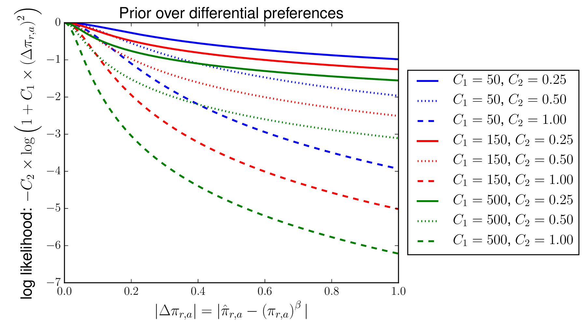

Experimentally Informed Codon Models¶
Contents
Overview¶
Experimentally Informed Codon Models (ExpCM) describe the evolution of protein-coding genes in terms of their site-specific amino-acid preferences. These models improve on conventional non-site-specific phylogenetic substitution models because they account for the different constraints at different sites of the protein encoded by the gene.
Specifically, for each gene, we assume that we know the preference \(\pi_{r,a}\) of site \(r\) for each amino-acid \(a\) (we constrain \(1 = \sum_a \pi_{r,a}\)). Typically, these preferences might be measured in deep mutational scanning experiments. For a description of how the preferences can be inferred from experimental data, see Bloom, BMC Bioinformatics, 16:168.
For examples of previous studies that have used experimentally measured site-specific amino-acid preferences in phylogenetic analyses, see:
These experimentally informed site-specific substitution models closely parallel those used in studies that infer the site-specific information from natural sequences; see Rodrigue and Lartillot, PNAS, 107:4629-4634. For a more general discussion of models of this form, see Halpern and Bruno, Mol Biol Evol, 15:910-917 and McCandlish and Stoltzfus, Quarterly Review of Biology, 89:225-252.
The ExpCM implemented by phydms are similar but not completely identical to those in aforementioned publications. The ExpCM in phydms has the following components:
- A reversible model of nucleotide substitution that is assumed to be constant across sites.
- A reversible model of amino-acid substitution that differs among sites based on the site-specific amino-acid preferences.
- A stringency parameter \(\beta\) that reflects how strongly the evolution of the gene in nature adheres to the site-specific amino-acid preferences. Under certain assumptions about the correspondence between the preferences and fitness effects of mutatons, \(\beta\) probably has some connection to effective population size.
- An \(\omega\) parameter that reflects that relative rate of nonsynonymous versus synonymous substitutions after accounting for fact that the site-specific preferences will typically retard the overall rate of nonsynonymous substitution. This \(\omega\) is not identical to the one that would be inferred using a conventional Goldman-Yang or Muse-Gaut model, since it reflects the relative rates of these two types of substitutions after accounting for the preferences. Indeed, if the preferences perfectly captured the contraints on nature evolution, we might expect \(\omega = 1\) since there would be no further reduction in the rate of nonsynonymous substitutions after accounting for the site-specific preferences.
Below is an exact definition of the ExpCM model, and an explanation of how it is used to fit site-specific measures of selection.
The ExpCM substitution model¶
The substitution model is in mutation-selection form. The rate of substitution \(P_{r,xy}\) from codon \(x\) to codon \(y\) at site \(r\) is
where \(Q_{xy}\) is the rate of mutation from x to y and \(F_{r,xy}\) represents the selection on this mutation. Note that the mutation terms are identical across sites, but the selection terms are site-specific.
The mutation rate terms \(Q_{xy}\) are given by what is essentially a HKY85 model. It consists of transition-transversion ratio \(\kappa\) and four nucleotide frequencies \(\phi_{A}\), \(\phi_{C}\), \(\phi_{G}\), and \(\phi_{T}\) (these nucleotide frequencies only constitute three independent parameters since they sum to one). The frequencies are the expected nucleotide composition in the absence of any selection on amino acids. The mutation rate terms are:
The selection terms \(F_{r,xy}\) are defined in terms of the site-specific amino acid preferences. Let \(\pi_{r,a}\) denote the preference of site \(r\) for amino acid \(a\), and let \(\operatorname{A}\left(x\right)\) denote the amino acid encoded by codon \(x\). Let \(\beta\) be a stringency parameter, and let \(\omega\) be a relative rate of nonsynonymous to synonymous mutations. Then the selection terms are:
Equation (3) differs from that described in Bloom, Mol Biol Evol, 31:2753-2769 only by the addition of the \(\omega\) parameter that differentiates nonsynonymous and synonymoust mutations; the equation in that reference was in turn based on the one originally derived by Halpern and Bruno, Mol Biol Evol, 15:910-917 (although note that the Halpern and Bruno equation contains a key typographical error in the denominator). The stringency parameter \(\beta\) has a value of greater than one if natural selection favors high-preference amino acids with greater stringency than suggested by the \(\pi_{r,a}\) values, and has a value of less than one if natural selection favors high-preference amino acids with less stringency than suggested by the \(\pi_{r,a}\) values. The \(\omega\) parameter is not a ratio of nonsynonymous to synonymous mutations, but rather their relative rates after accounting for the differing preferences among sites.
The stationary state of the model defined by the mutation terms alone is trivially observed to be
where \(x_1\), \(x_2\), and \(x_3\) are the nucleotides at positions 1, 2, and 3 of codon \(x\), and it is also trivially observed that this mutation-term only model is reversible (since direct substitution easily verifies that \(q_x \times Q_{xy} = q_y \times Q_{yx}\)).
In Bloom, Mol Biol Evol, 31:2753-2769, it is shown that the stationary state of the model defined by the selection terms alone is
and furthermore that this selection-term only model is reversible (the derivation in Bloom, Mol Biol Evol, 31:2753-2769 doesn’t include the \(\omega\) term, but carrying through the same derivation with this term yields the above result).
Finally, Bloom, Mol Biol Evol, 31:2753-2769 shows that given these stationary states, the overall model defined by (1) is reversible and has stationary state
Therefore, assuming that the preferences \(\pi_{r,a}\) are known a priori for all amino acids \(a\) at all sites \(r\) (e.g. the preferences have been measured in a deep mutational scanning experiment), the substitution model is completely defined by giving values to the following six parameters: \(\omega\), \(\beta\), \(\kappa\), \(\phi_A\), \(\phi_C\), and \(\phi_G\). When fitting and ExpCM for a gene phylogeny, phydms assumes that these six parameters are constant across all sites, and optimizes their values by maximum likelihood.
Identifying diversifying selection via site-specific \(\omega_r\) values¶
One type of interesting selection is diversifying selection, where there is continual pressure for amino-acid change. Such selection might be expected to occur at sites that are targeted by adaptive immunity or subjected to some other form of selection which constantly favors changes in the protein sequence. At such sites, we expect that the relative rate of nonsynonymous substitutions will be higher than suggested by the site-specific preferences \(\pi_{r,a}\) due to this diversifying selection.
To detect diversifying selection at specific sites within the framework of the ExpCM implemented in phydms, we use an approach that is highly analogous the FEL (fixed effects likelihood) method described by Kosakovsky Pond and Frost, Mol Biol Evol, 22:1208-1222. Essentially, the tree topology, branch lengths, and all shared model parameters are fixed to their maximum-likelihood values optimized over the entire gene sequence. Then for each site \(r\), we fit a site-specific ratio of the rate of synonymous versus nonsynonymous substitutions while holding all holding all the other tree and model parameters constant. Effectively, this is fitting a different \(\omega_r\) for each site, and so this analysis is indicated as --omegabysite in the phydms options.
Specifically, after fixing all of the other parameters as described above, for each site \(r\) we re-define Equation (3) as
and then fit the values for \(\mu_r\) and \(\omega_r\). After this fitting, \(\mu_r\) can be interpreted as the synonymous rate, and \(\mu_r \times \omega_r\) as the nonsynonymous rate. The reason that we fit \(\mu_r\) as well as \(\omega_r\) is to model variation is synonymous rate; this can be important for the reasons described in the Discussion of Kosakovsky Pond and Frost, Mol Biol Evol, 22:1208-1222. If you use the --omegabysite_fixsyn option to phydms then \(\mu_r\) is not fit, but rather is constrained to one.
The null hypothesis is that \(\omega_r = 1\). We compute a P-value for rejection of this null hypothesis using a \(\chi_1^2\) test to compare the likelihood obtained when fitting both \(\mu_r\) and \(\omega_r\) to that obtained when fitting only \(\mu_r\) and fixing \(\omega_r = 1\). See Kosakovsky Pond and Frost, Mol Biol Evol, 22:1208-1222 for a justification for using a \(\chi_1^2\) test for this type of analysis. Note that the P-values reported by phydms are not adjusted for multiple testing, so you will want to make such an adjustment if you are testng the hypothesis that any site has \(\omega_r \ne 1\). Note also that in many cases, the fitted value of \(\omega_r\) will either be very small (e.g. close to zero) or very large (e.g. close to \(\infty\)) – in general, it is more informative to look for sites with small P-values and then simply look to see if \(\omega\) is > or < 1.
Significant support for a value of \(\omega_r > 1\) can be taken as evidence for diversifying selection beyond that expected given the constraints encapsulated in the site-specific amino-acid preferences. Significant support for a value of \(\omega_r < 1\) can be taken as evidence for selection against amino-acid change beyond that expected given the constraints encapsulated in the site-specific amino-acid preferences. Note, however, that if the site-specific preferences don’t accurately describe the real constraints, you might get \(\omega_r \ne 1\) simply because of this fact – so you will want to examine if sites might be subject to selection that is better described by modulating the stringency parameter \(\beta\) or by invoking differential preferences, as described below.
Identifying differential selection via site-specific \(\beta_r\) values¶
Another type of interesting selection is when natural evolution prefers different amino acids than suggested by the \(\pi_{r,a}\) values. This type of differential selection suggests discordant selection pressures between natural evolution and the process used to obtain the \(\pi_{r,a}\) values.
One way to test for differential selection is to fit a different stringency parameter \(\beta_r\) for each site \(r\) after fixing the tree / branches and all other model parameters to their maximum-likelihood values obtained for the entire tree. Specifically, after fixing all of these other parameters, for each site \(r\) we re-define Equation (3) as
and then fit a value for \(\beta_r\). We compare the likelihood using this fitted value of \(\beta_r\) to that obtained when using the value \(\beta\) obtained by fitting a single \(\beta\) over the entire gene, and compute the ratio \(\beta_r / \beta\). The null hypothesis is that \(\beta_r / \beta = 1\). We compute a P-value for rejection of this null hypothesis using a \(\chi_1^2\) test; note that the P-values reported by phydms are not adjusted for multiple-hypothesis testing, so you will want to make such an adjustment if testing the hypothesis that any site has \(\beta_r / \beta \ne 1\). This analysis can be performed using phydms with the --stringencybysite option. Note that phydms reports the ratio \(\beta_r / \beta\), not the value of \(\beta_r\) itself.
Significant support for \(\beta_r / \beta < 1\) indicates that preferences don’t actual describe the constraints on the gene’s evolution accurately. Unfortunately, the ratio alone does not tell which particular amino acids are more or less disfavored by natural evolution, but a ratio < 1 does indicate that flatter preferences (more uniform across amino acids) do describe the evolution of the site better than the preferences encapsulated in the \(\pi_{r,a}\) values. A value of \(\beta_r / \beta > 1\) indicates that natural selection favors the amino acids with high \(\pi_{r,a}\), but that at the specific site \(r\) this preference is more stringent than for the typical site in the gene (i.e. the preferences point in the direction of actual selection, but actual selection is more stringent at this site than suggested by the preferences).
Identifying differentially selected amino acids by fitting preferences for each site¶
A more complete approach is to examine each site to see the extent to which the preferences for each amino acid in nature differ from those encapsulated in the \(\pi_{r,a}\) values. The advantage of this approach is that it can identify any form of differential selection (the approach in the previous section works best when the selection in nature is more uniform across amino acids than the \(\pi_{r,a}\) values), and also that it can pinpoint specific amino acids that are favored or disfavored in natural evolution by an unexpected amount. The disadvantage is that phydms does not currently implement a good way to statistically test the significance of this type of differential selection, so although you can visualize and assess the selection it’s hard to say that any given differential selection is significant at some specific P-value threshold.
To identify differential selection, we first fix the tree / branch lengths and all parameters of the substitution model at their maximum-likelihood values obtained across the whole tree. We then define a new set of 20 preferences for each site \(r\) that we will denote as \(\hat{\pi}_{r,a}\) (note that these only represent 19 parameters, as \(1 = \sum_a \hat{\pi}_{r,a}\). We then redefine Equation (3) replacing the \(\left(\pi_{r,a}\right)^{\beta}\) values with the \(\hat{\pi}_{r,a}\) values as
Simply fitting the model defined above with these 19 \(\hat{\pi}_{r,a}\) values will probably overfit the data since we are including 19 new parameters. We therefore regularize the parameters by defining a prior that favors \(\hat{\pi}_{r,a} = \left(\pi_{r,a}\right)^{\beta}\).
Although a Dirichlet prior peaked on the preferences might seem attractive, it performs poorly in practice because the maximum a posteriori is very different for small preferences depending on their exact magnitude – for instance, under a Dirichlet prior we will have very different costs of increasing the differential preference by 0.1 depending on whether the a priori peak estimate is \(10^{-3}\) or \(10^{-4}\). This is undesirable, so instead we use a prior based on the product of inverse-quadratics.
or equivalently
where \(C_1\) and \(C_2\) are concentration parameters specified via the --diffprefconc option. Larger values of these favor \(\hat{\pi}_{r,a}\) values that more closely match the \(\left(\pi_{r,a}\right)^{\beta}\) values (and so favor smaller values of \(\Delta\pi_{r,a} = \hat{\pi}_{r,a} - \frac{\left(\pi_{r,a}\right)^{\beta}}{\sum_{a'} \left(\pi_{r,a'}\right)^{\beta}}\)).
The phydms program has reasonable defaults for these concentration parameters, but you can fine tune them with --diffprefconc.
Here is a plot of the log prior (Equation (8)) as a function of \(C_1\) and \(C_2\).
{kind=link}
As the plot makes clear, this prior has the desirable feature of penalizing small differential preferences proportionally more than larger ones, which is good if we think that most sites have no differential selection but some have a lot.
To obtain the \(\hat{\pi}_{r,a}\) values, the --diffprefsbysite option to phydms jointly optimizes the product of the prior in Equation (7) and the likelihood (with fixed tree / branches and other model parameters) using Equation (6). In effect, this is the maximum a posteriori estimate of the \(\hat{\pi}_{r,a}\) given the prior defined by Equation (7).
One might wonder why phydms takes the maximum a posteriori estimates rather than defining a prior with \(\left(\pi_{r,a}\right)^{\beta}\) as the mean rather than the mode, and then sampling from the posterior to obtain the posterior mean estimates. In fact, this procedure would probably be better, but MCMC sampling of the posterior is much more computationally intensive than the maximum a posteriori approach.
The actual values reported by phydms are the differential preferences, defined as
So a differential preference of \(\Delta\pi_{r,a} > 0\) suggests that natural evolution favors amino-acid \(a\) at site \(r\) more than suggested by the preferences, and a value < 0 suggests that natural evolution disfavors this amino acid. One way to summarize the total difference in preferences is the root-mean-square of the differential preferences at a site, defined as
Another way to summarize the total difference in preferences is the half the absolute sum of the differential preferences, value:
The theoretical maximum of this quantity is one.
Unfortunately, phydms does not currently include any method for statistically testing (e.g. P-values) the hypothesis that any given \(\Delta\pi_{r,a}\) is not equal to zero. So instead, you will have to keep in mind that these values are regularized (and so do not typically become substantially non-zero without some reasonable statistical evidence), and then manually inspect them for interesting trends.